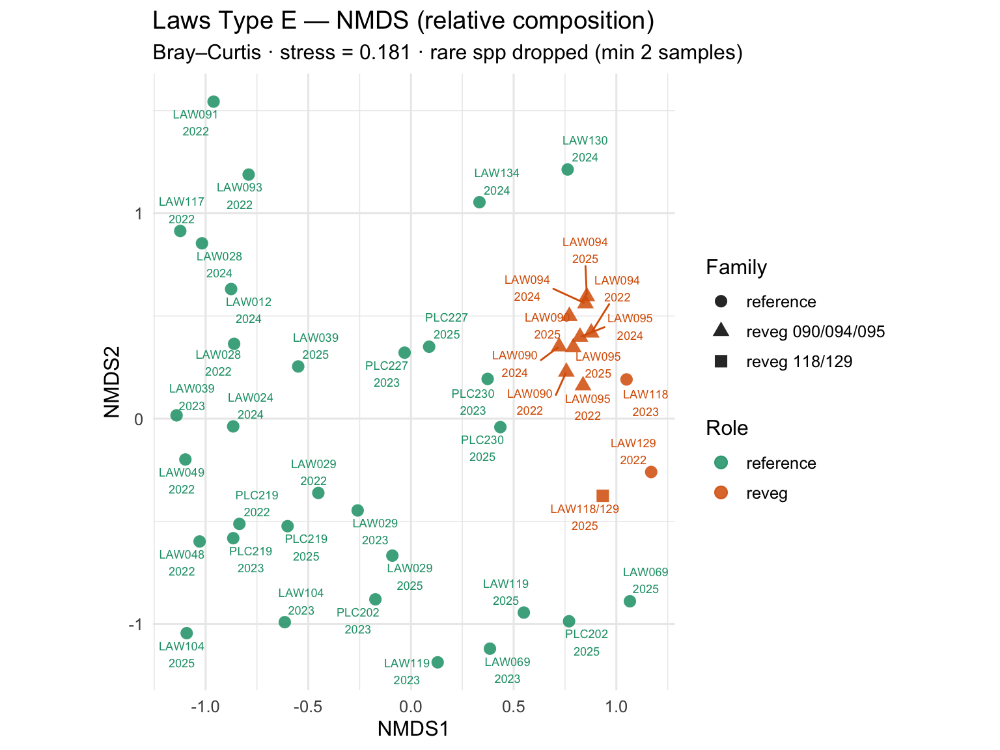

Bray–Curtis ordination of Laws Type E and reference parcel composition
Modified
July 25, 2026
Draft / sandbox — what this means
What: This page is an open, versioned analysis artifact—methods and numbers stay visible while tools mature (Snow et al. 2026).
Why: Closed file-share workflows hide how compliance figures were produced. Publishing drafts lets partners and the public inspect assumptions early, without treating prototypes as adopted policy or Technical Group findings.1
Companion pages
STM (draft) — ABAG → early seral → reference-like scrub
What:Non-metric multidimensional scaling (NMDS) maps parcel–year samples so distances reflect community dissimilarity(McCune and Grace 2002). Species values are relative cover (row sums = 1); distance is Bray–Curtis; fitting uses vegan::metaMDS(Oksanen et al. 2024)—the same core pipeline as ICWD’s stm helpers.
Why: Compliance uses absolute (capped) cover. Relative composition asks a different question: do revegetation parcels (ABAG / early seral starts) sit apart from reference scrub in species space, and do later years move toward the reference cloud?2
Methods (Laws adaptation)
Reveg: LAW090/094/095 (2022–2025 workbook); LAW118/129 combined for 2025.
Reference: long-format reference CSVs (transect hits as cover).
Aggregate within parcel–year; row-normalize; drop species in <2 samples.
Bray–Curtis → metaMDS (k = 2); stress on the figure.
Color by role (reference vs reveg); shape by parcel family.
Run 0 stress 0.1877248
Run 1 stress 0.1883394
Run 2 stress 0.2076997
Run 3 stress 0.1813941
... New best solution
... Procrustes: rmse 0.05320044 max resid 0.3045848
Run 4 stress 0.1877248
Run 5 stress 0.2086552
Run 6 stress 0.2098296
Run 7 stress 0.1915483
Run 8 stress 0.1915483
Run 9 stress 0.2093531
Run 10 stress 0.1832765
Run 11 stress 0.1883394
Run 12 stress 0.1813941
... Procrustes: rmse 1.15249e-05 max resid 5.776634e-05
... Similar to previous best
Run 13 stress 0.1915483
Run 14 stress 0.2302263
Run 15 stress 0.1813941
... Procrustes: rmse 9.156305e-06 max resid 4.5309e-05
... Similar to previous best
Run 16 stress 0.1998426
Run 17 stress 0.2056783
Run 18 stress 0.1813941
... Procrustes: rmse 2.990254e-06 max resid 1.1739e-05
... Similar to previous best
Run 19 stress 0.2032681
Run 20 stress 0.1877248
*** Best solution repeated 3 times
[1] TRUE

Figure 1. NMDS of parcel–year relative composition: reference vs Laws Type E revegetation samples.
Table 1. Parcel–year samples in the NMDS (download: docs/laws_nmds_scores.csv).
Reading the plot for the STM
Pattern
Interpretation
Reference cloud
Composition near ESD potential (Type A scrub phases)
McCune, Bruce, and James B. Grace. 2002. Analysis of Ecological Communities. Gleneden Beach, Oregon: MjM Software Design.
Oksanen, Jari, Gavin L. Simpson, F. Guillaume Blanchet, Roeland Kindt, Pierre Legendre, Peter R. Minchin, R. B. O’Hara, et al. 2024. vegan: Community Ecology Package. https://CRAN.R-project.org/package=vegan.
Snow, Tasha, Christopher Holdgraf, Wilson Sauthoff, Jessica Scheick, Ellianna Abrahams, Joanna Millstein, Sanjay Bhangar, et al. 2026. “A Path to Better Science Through Co-Creation and Open Infrastructure.”Perspectives of Earth and Space Scientists 7 (1): e2025CN000295. https://doi.org/10.1029/2025CN000295.
Footnotes
Sandbox means placeholders and sparse labels are allowed during prototyping; challenge numbers in the code and sources, not from a screenshot alone.↩︎
Row-normalization removes magnitude so sparse vs dense stands can still be compared by who is present; bare ground is not a species here, so ABAG barrenness is only partly visible.↩︎
LAW118/129 are mostly 2025-only so far; 090-group has 2022–2025.↩︎
Source Code
---title: "NMDS — reference vs revegetation (draft)"subtitle: "Bray–Curtis ordination of Laws Type E and reference parcel composition"affiliation: "Inyo County Water Department"date-modified: todayformat: html: toc: true toc-depth: 3execute: echo: false warning: false message: false---{{< include _includes/sandbox_disclaimer.qmd >}}::: {.callout-note}## Companion pages- [STM (draft)](stm.html) — ABAG → early seral → reference-like scrub - [Reference](reference.html) · [Revegetation](index.html)- Methods paper: [STM / NMDS for Type E (draft)](paper_stm_nmds.html):::## Purpose**What:** **Non-metric multidimensional scaling (NMDS)** maps parcel–year samples so distances reflect community **dissimilarity** [@McCuneGrace2002]. Species values are **relative cover** (row sums = 1); distance is Bray–Curtis; fitting uses `vegan::metaMDS`[@Oksanen2024]—the same core pipeline as ICWD’s [`stm`](https://github.com/inyo-gov/stm) helpers.**Why:** Compliance uses **absolute** (capped) cover. Relative composition asks a different question: do **revegetation** parcels (ABAG / early seral starts) sit apart from **reference** scrub in species space, and do later years move toward the reference cloud?^[Row-normalization removes magnitude so sparse vs dense stands can still be compared by *who* is present; bare ground is not a species here, so ABAG barrenness is only partly visible.]## Methods (Laws adaptation)1. **Reveg:** LAW090/094/095 (2022–2025 workbook); LAW118/129 combined for 2025. 2. **Reference:** long-format reference CSVs (transect hits as cover). 3. Aggregate within parcel–year; row-normalize; drop species in <2 samples. 4. Bray–Curtis → `metaMDS` (*k* = 2); stress on the figure. 5. Color by **role** (reference vs reveg); shape by parcel family.```{r}#| label: fig-nmds-laws#| fig-cap: "NMDS of parcel–year relative composition: reference vs Laws Type E revegetation samples."#| fig-height: 6#| fig-width: 8source("code/nmds_laws.R")long <-load_laws_composition_long(".")built <-build_relative_community_laws(long)comm <-filter_rare_species(built$comm, min_occ =2)comm <- comm[, colSums(comm) >0, drop =FALSE]meta <- built$meta %>% dplyr::filter(sample %in%rownames(comm)) %>% dplyr::arrange(match(sample, rownames(comm)))comm <- comm[meta$sample, , drop =FALSE]meta <- meta %>% dplyr::mutate(role = dplyr::coalesce(as.character(role), "reference"),family = dplyr::case_when( parcel %in%c("LAW090", "LAW094", "LAW095") ~"reveg 090/094/095", parcel =="LAW118/129"~"reveg 118/129",TRUE~"reference" ),group_label = dplyr::coalesce(as.character(reference_group), family) )nmds <-run_nmds(comm, trymax =40)sc <-scores_with_meta(nmds, meta)readr::write_csv(sc, "data/processed/laws_nmds_scores.csv")file.copy("data/processed/laws_nmds_scores.csv", "docs/laws_nmds_scores.csv", overwrite =TRUE)stress <-round(nmds$stress, 3)ggplot(sc, aes(x = NMDS1, y = NMDS2, color = role, shape = family)) +geom_point(size =3, alpha =0.85) + ggrepel::geom_text_repel(aes(label =paste0(parcel, "\n", year)),size =2.4,max.overlaps =40,show.legend =FALSE ) +scale_color_manual(values =c(reference ="#1b9e77", reveg ="#d95f02")) +labs(title ="Laws Type E — NMDS (relative composition)",subtitle =paste0("Bray–Curtis · stress = ", stress, " · rare spp dropped (min 2 samples)"),color ="Role",shape ="Family" ) +theme_minimal(base_size =12) +coord_equal()``````{r}#| label: tbl-nmds-samples#| tbl-cap: "Parcel–year samples in the NMDS (download: docs/laws_nmds_scores.csv)."sc_tbl <- sc %>% dplyr::transmute(Parcel = parcel,Year = year,Role = role,Family = family,`Ref group`= dplyr::coalesce(as.character(reference_group), "—"),NMDS1 =round(NMDS1, 3),NMDS2 =round(NMDS2, 3) ) %>% dplyr::arrange(Role, Parcel, Year)DT::datatable(sc_tbl, rownames =FALSE, options =list(pageLength =20, scrollX =TRUE))```## Reading the plot for the STM| Pattern | Interpretation ||---------|----------------|| Reference cloud | Composition near ESD potential (Type A scrub phases) || Reveg apart / on the edge | Still in **ABAG / early seral** space ([STM](stm.html)) || Same parcel moves toward the cloud across years | Trajectory hypothesis for assisted recovery^[LAW118/129 are mostly 2025-only so far; 090-group has 2022–2025.]|## Limitations- Relative cover omits bare as a taxon; ABAG barrenness is understated. - Reference parcels are not filtered to Gravelly Loam alone; reveg targets are (`laws_type_e_esd.csv`). - PERMANOVA / envfit live in `stm`; this page is the Laws-facing first cut.## Code`code/nmds_laws.R` · upstream `stm/code/nmds_functions.R`